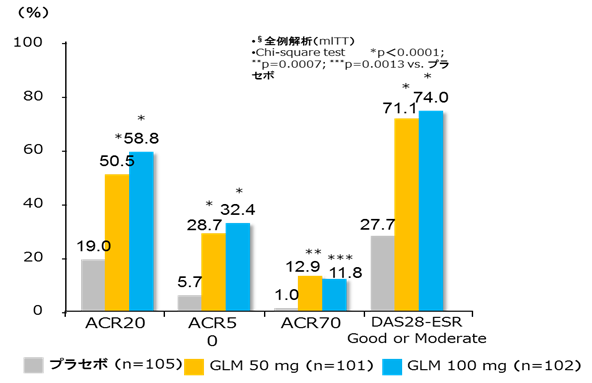
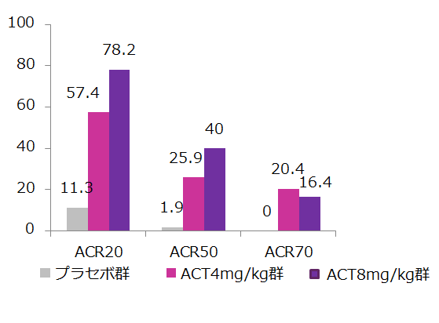

３．SIMはMTXが使用できない場合、単剤で初回から100㎎が使用できます
MonoにおいてSIM100㎎はACT通常量を超える効果は見られない
- GO-MONO Study（SIM）
- ●日本人RAを対象にSIM50㎎と100㎎単剤の有効性と安全性を評価するRCT。計316名。
- ●プラセボ、SIM50㎎、SIM100㎎を4週毎に投与。
- ●【主要】14週時のACR20

- 国内PhaseⅡ Study（ACT）
- ●日本人RAを対象にプラセボ、ACT4㎎/kg、8㎎/kg単剤の有効性と安全性に関する至適用量を評価するRCT。
- ●【主要】12週目あるいは最終観察時のACR20

直接比較はできないものの、単剤の臨床試験ではSIM100㎎よりもACT8㎎/kgの方が有効性が高い傾向
→ACTはMonoの効果が高く、SIM100㎎の1/3の薬剤費で治療できる
Takeuchi T,et.al;Ann Rheum Dis.2013 Sep 1;72(9):1488-95.
アクテムラ社内資料 RA後期第Ⅱ相試験